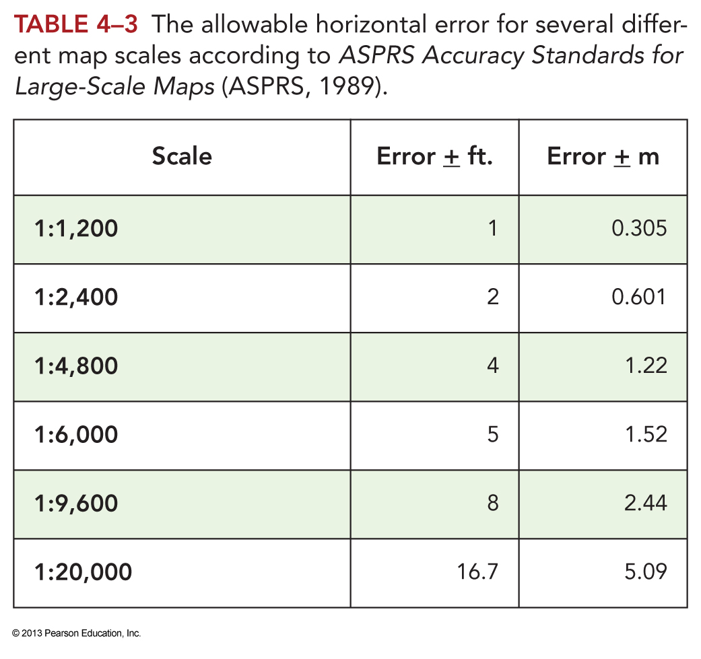
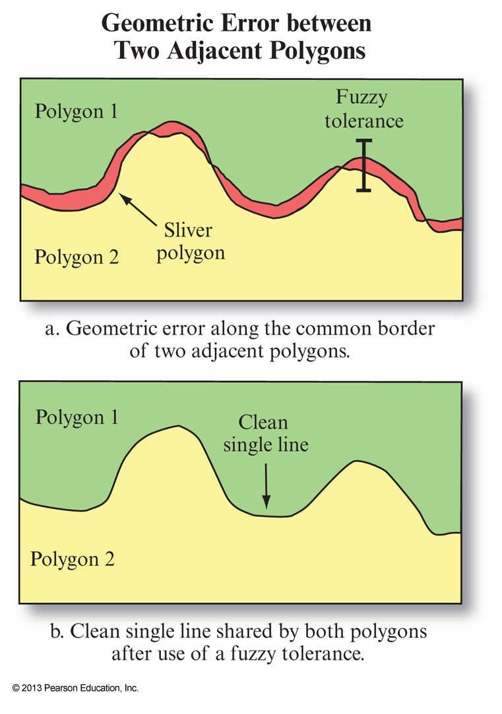

GEOG*3480
GIS and Spatial Analysis
Data Quality Part 1
John Lindsay
Fall 2015
Readings
- Jensen and Jensen Chapter 4
Lecture Outline
- Introduction
- Metadata
- Accuracy and Precision
- Types of Error in Geospatial
- Error Propagation
- The Ecological Fallacy
- Modifiable Areal Unit Problem
Introduction
- Error is a natural component of all data and geospatial data are no different.
- The level of error in a particular data set may limit its suitability for certain applications.
- Error propagates throughout a GIS workflow, i.e. the level of error in the output is greater
than the input.
- This is particularly salient in the era of free geospatial data that are shared
so easily over the Internet.
- As GIS has become more ubiquitous, GIS users now have widely varying level of experience
and backgrounds...the issue of error has become increasingly important.
Metadata
- Data about data.
- Provides a means by which we can store and communicate information about the
data quality and errors and the accuracy and precision of the instruments or
methods used to collect the data.
Metadata
- Most geospatial data formats allow for metadata which are often stored as
ASCII data in a markup format (e.g. XML). Some data formats (e.g. the GeoTIFF) have
built-in means of communicating metadata (i.e. 'tags').
- Most GIS software has the ability to create and edit metadata.
- The problem lies in the fact that GIS do not enforce metadata requirements...analysis tools
will create new files that do not require the user to create metadata.
Accuracy and Precision
- Both are important aspects of data quality and are related.
- Accuracy is the extent to which both attribute
and positional data correspond to reality.
- Precision is how exact some measurement is.
- In some instances, this can be expressed as the number of significant
decimal places.
- Accuracy is how true something is, precision is how exact we are in communicating it.
Types of Error in Geospatial
- Attribute Error
- Positional Error
- Topological Error
- Temporal Accuracy
Attribute Error
- These are generally caused by blunders in data entry or by misclassifications.
- How can we assess the level of attribute error? We have to perform a spot-check on
a sample of the data.
- The sample must be representative of the population.
Error Matrix and Associated Stats
- The info gathered from sampling is usually placed in an error matrix,
i.e. a table relating observed vs predicted values.
- Overall Accuracy: number of correctly classified values expressed as a percentage of the total number of data points
- Producer's Accuracy: probability that a reference sample will be correctly classified
- User's Accuracy: probability that a classified value (map value) actually matches the reference data
- Kappa Index of Agreement: a measure of classification accuracy that accounts for chance agreement
What about interval ratio data?
- KIA is useful for categorial (classified) data, but what about interval/ratio.
- Root-Mean-Square-Error (RMSE)
\(RMSE=\sqrt{\frac{\underset{j=1}{\overset{N}{\Sigma}}(X_{Act_i} - X_{Obs_i})^2}{N}}\)
Positional Error
- Positional Accuracy measures how close the geographic coordinates of a mapped feature are to reality.
- Includes horizontal and vertical components.
- Calculated by comparing mapped x,y,z values to those measured using a more accurate measuring device.
- Is scale dependent.
- Problems arise when you combine data of different scales in a GIS.
\(RMSE=\sqrt{\frac{\underset{j=1}{\overset{N}{\Sigma}}[(X_{Act_i} - X_{Obs_i})^2 + (Y_{Act_i} - Y_{Obs_i})^2]}{N}}\)
Map (Positional) Accuracy Standards

Map (Positional) Accuracy Standards

Temporal Accuracy
- Refers to how up-to-date a geospatial database is.
- How ephemeral is the phenomena being represented?
- Types of temporal events
- Continuous, e.g. Temperature varies continuously
- Majoritive, go on most of the time, e.g. Land use change
- Sporatic, e.g. Storms occur infrequently
- Unique (one-off), e.g. Creation of a flood plain